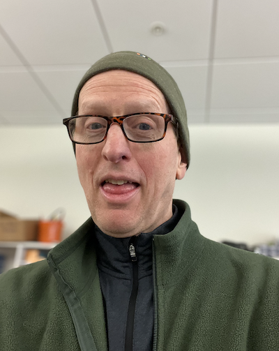

Anthony Beckwith's Projects
ABOUT Anthony:

Grew up in Cambridge, MA, and got my B.S. in Mathematics from UMass/Amherst and a
Masters in Education from UMass/Boston
Recently retired from 30+ years of teaching high school
mathematics
and computer science
An avid bicycler who loves to plan complex multi-day trips
I produce
original music and do volunteer work for a local historical society
I currently live with my wife and three cats in Arlington, MA
Contact: anthonyrbeckwith@gmail.com